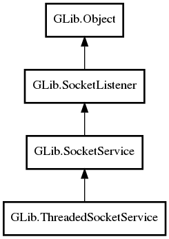

GLib.ThreadedSocketService Reference Manual
Packages
gio-2.0
GLib
ThreadedSocketService
max_threads
ThreadedSocketService
run
ThreadedSocketService
Object Hierarchy:

Description:
public
class
ThreadedSocketService
:
SocketService
Namespace:
GLib
Package:
gio-2.0
Content:
Properties:
public
int
max_threads
{
construct
set
;
get
; }
Creation methods:
public
ThreadedSocketService
(
int
max_threads)
Signals:
public
virtual
signal
bool
run
(
SocketConnection
connection,
Object
source_object)